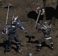
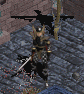
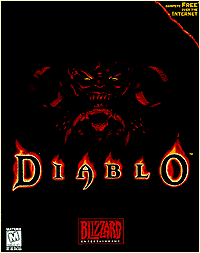

Diablo
Blizzard Entertainment
 | (out of 5) |
Price: $54.95
Blizzard Entertainment has hit the mark with the release (early January '97) of Diablo. The addicted members of the IU staff agree: The drive to improve your character keeps you glued to the game for days and weeks on end. Although it resembles a role-playing game, Diablo does not follow the standard linear RPG style. No longer are you forced to find certain items or talk to certain people before you can advance into new areas. If you wish, you can try to make it to the end of the game with only the equipment and experience of a beginning character. You can play the entire game three or four times and still not see all the creatures, unique items or sub-quests.

You choose from three character types. Warriors are naturally proficient with swords and maces, swinging them faster and to greater effect than other classes. By developing his strength, the warrior increases the amount of damage he can deal out with each blow. The Rogue, a member of the "Sisterhood of the Sightless Eye," can nock an arrow to her bow faster than the others. As her dexterity increases so does her accuracy. Schooled in magic, the Sorcerer can most efficiently convert surrounding Mana into energy under his control. As he gains experience with his art he learns to glean more energy from less Mana.
The storyline of of Diablo is almost lost in the search for bigger and better weapons and armor. You appear in the village of Tristram where King Leoric's son has been kidnapped and dragged into the labyrinth beneath the town's church by Archbishop Lazarus. It appears that one of the unholy triumverate of Hell, Diablo, has managed to regain enough power (while imprisoned) to influence the mind of Lazarus. Will the king's son become the container into which Diablo pours himself?
As you battle your way through 16+ levels of the labyrinth you gain "experience points." (Those of you who have any knowledge of TSR's Dungeons & Dragons will feel right at home with all of the terminology used in this game, from "hit points" to "Silver Bow, +17 to hit.") At a pre-determined number you advance one level. Your skills increase and you are given five points to distribute over four "attributes." Increasing Strength allows you to do more damage to enemies. Higher Dexterity improves your defensive rating, "armor class," as well as your accuracy. More Magic means more potent spells and more Mana available to cast them. Your Vitality is a measure of your life energy. Increased Vitality allows you to take more abuse from the creepy-crawlies.
Characters wear armor, helms, shields, rings and amulets of varying sizes and qualities.
Adding to the richness of the game is the huge variety of objects to be found. In the category of swords there are sabers, scimitars, falchions, blades, and claymores, as well as short, long, broad, bastard, great and two-handed swords. There are equally large arrays of of axes, maces, bows, shields, staves, caps and armor. (Sadly, however, no spears.) You may even be lucky enough to find a unique item with a host of special powers and its own name.
This search for cool stuff tends to eclipse the point of the game, which is to end the suffering of Tristram. As we approached the game's end, the IU Diablo addicts became restless thinking about the next character they'd start ("I'm going to make a warrior who only uses one-handed swords") and wishing that there was already an expansion set available so that existing characters could go on improving and finding new stuff.

As if in answer to our prayers, Blizzard has set up Battle.Net, a free network of servers which can be accessed automatically by the game as long as you're dialed into your ISP when your start up. You can't import existing characters into the multiplayer area, but you can keep any character you start here. Join up to three other players from all over the world and adventure together. Squabble over who gets the cool stuff and how to split up the gold. Stay out of the way of missle fire--friendly spells and arrows can't tell you from a monster. Once your character has become too powerful to gain experience just by slaying labyrinth dwellers, go head-to-head with other powerful players and fight to the death. A whole society has developed on the Web, with players offering bounties of extremely rare and powerful items to any that avenge their deaths by killing their killers.
A built-in chat system lets you communicate with the other players; the creator of a game has password control to allow in only those who are welcome. At the time we recieved the software for review, there was very noticable lag on Battle.Net as well as with direct modem-to-modem and IPX network play. A patch was released in mid-March to alleviate this lag, which seemed to help.
Diablo has left us wanting more!
For more information on Diablo, check out Blizzard's official site at http://www.blizzard.com.
Type of game: real-time, rpg
Platforms: Windows 95, (Mac in late '97)

Down the stairs and into the darkness below the neglected church you go, clutching your short sword, short staff or short bow. You must be cautious: You are weak and unskilled compared to the creatures who have claimed this once sacred ground. You go on, knowing that each slain foe or pillaged chest might offer up gold, with which you can buy better arms and armor. You may even acquire enchanted items which, once the nature of their enchantment is determined, may assist you in your quest to end the scourge of Diablo.
Warnings and tech stuff:
{kind=link}
{kind=link}